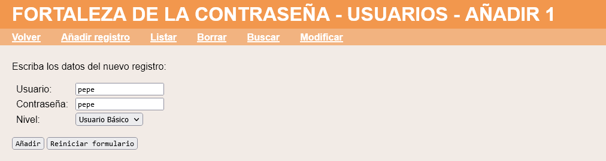
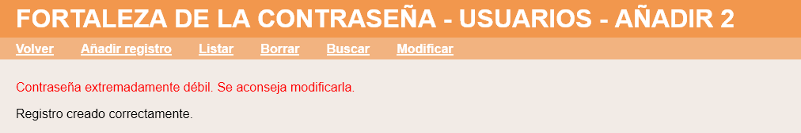
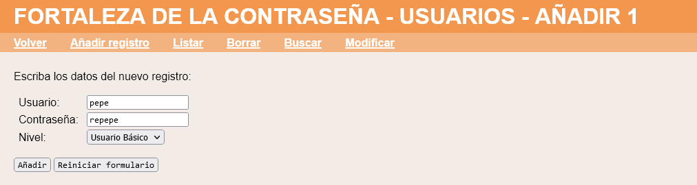
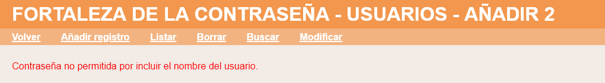
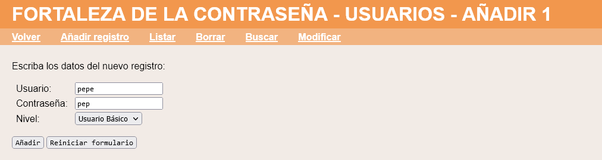
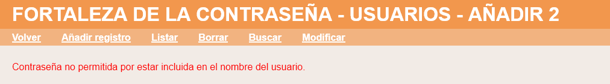
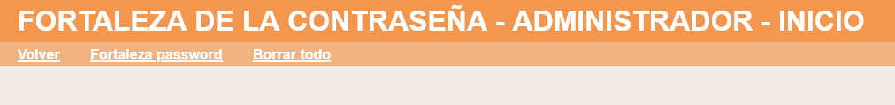
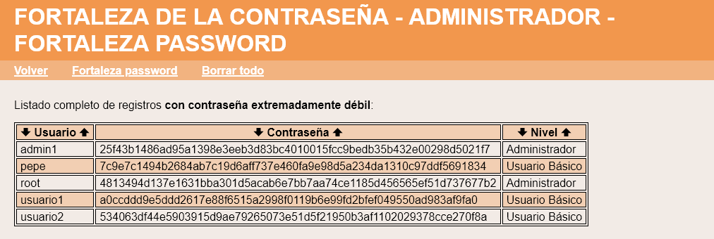

Exámenes - Bases de datos - Fortaleza de la contraseña
En este ejercicio se debe ampliar la aplicación proporcionada en la plantilla de manera que al crear un usuario se compruebe la fortaleza de la contraseña. Además, el administrador dispondrá de una página en la que se listen los usuarios cuya contraseña coincida con su nombre. La aplicación debe funcionar tanto en SQLite como en MySQL. Haga una captura de la pantalla en MySQL en la que se vea la base de datos de la aplicación y el contenido de la tabla de usuarios.
Fortaleza de la contraseña - Comentarios
Contraseña desaconsejada
Si el nombre del usuario coincide con la contraseña, se mostrará un aviso, pero se creará el registro:


Contraseña prohibida
En este ejercicio puede utilizar la función str_contains($pajar, $aguja) que devuelve true si encuentra la cadena $aguja en la cadena $pajar y false si no la encuentra.
Si la contraseña incluye el nombre del usuario, se mostrará un aviso y no se creará el registro:


Si el nombre del usuario incluye la contraseña, se mostrará un aviso y no se creará el registro:


Listado de usuarios con contraseña desaconsejada
Los usuarios administradores dispondrán de una opción para acceder al listado de usuarios con contraseña desaconsejada:

El listado mostrará únicamente los usuarios cuyo nombre coincida con la contraseña:

Modificación de Usuario
La modificación de Usuario no comprobará la fortaleza de la contraseña.